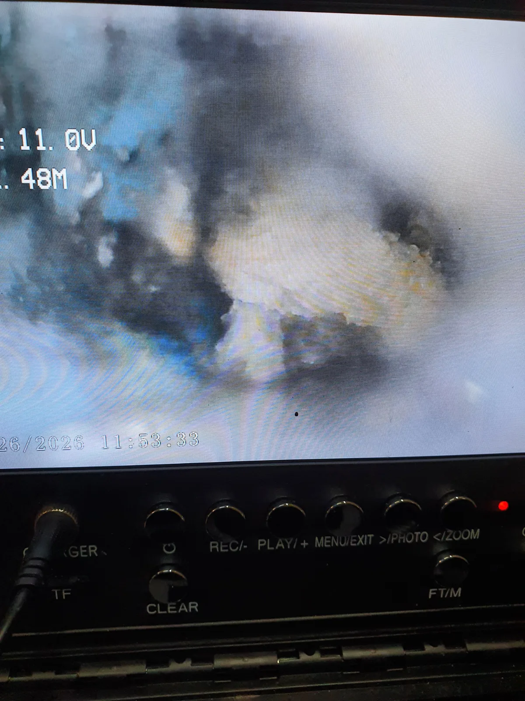
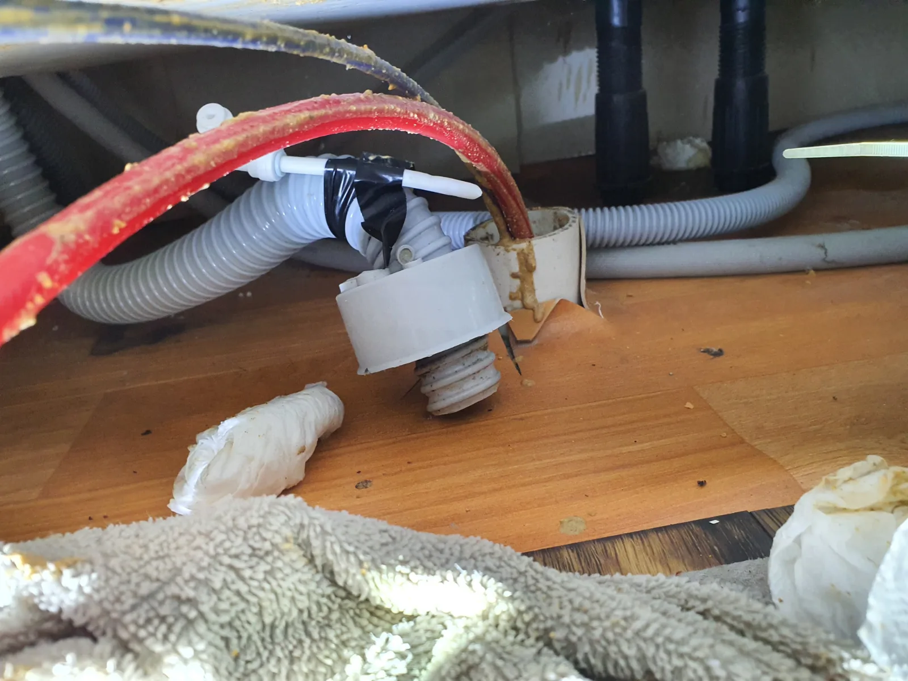

남양주시 별내동 싱크대막힘, 현장 도착 후 진단
이번 남양주시 별내동 싱크대막힘 현장은 새벽 1시경 작업이 진행된 실제 심야 긴급출동 사례입니다. 싱크대막힘은 시간과 관계없이 갑자기 발생할 수 있기 때문에 신라건축설비는 야간과 새벽에도 대응할 수 있도록 24시간 긴급출동 체계를 운영하고 있습니다.
현장에 도착한 숙련 기술자가 먼저 싱크대 하부 배관 구조와 배수 상태를 점검했습니다. 막혔다고 해서 곧바로 장비부터 투입하는 것이 아니라 배관 내시경으로 내부를 직접 확인해 막힘 위치와 오염 상태를 파악했습니다.
배관 내부를 내시경 화면으로 직접 확인하면서 막힘 상태와 작업이 필요한 구간을 점검했습니다. 신라건축설비는 현장 상태와 필요한 작업 범위를 먼저 확인하고 적용할 작업 방법과 비용에 영향을 주는 작업 범위를 안내한 뒤 진행하는 것을 중요하게 생각합니다.
같은 싱크대막힘이라도 배관 구조와 막힘 위치, 필요한 장비에 따라 작업 범위가 달라질 수 있기 때문에 처음부터 큰 작업을 권하기보다 정확한 진단을 통해 필요한 작업을 판단하는 것이 합리적인 비용으로 문제를 해결하는 데 중요합니다.
1단계: 증상 확인과 필요한 장비 작업
배관 내시경검사에서 확인된 막힘 구간을 중심으로 RIDGID 리지드 플렉스샤프트를 투입했습니다. 회전하는 샤프트를 이용해 배관 내부에 붙어 배수 흐름을 방해하던 이물질과 오염물을 제거하면서 통수 공간을 확보했습니다.
싱크대막힘은 단순히 입구 부분만 뚫어 일시적으로 물을 내려보내는 것보다 실제 막힘 위치와 배관 내부 상태를 확인하는 과정이 중요합니다.
신라건축설비는 변기막힘·싱크대막힘·하수구막힘을 전문적으로 다루며 현장 상태에 따라 배관 내시경검사, 석션, 관통, 샤프트, 배관세척 등 적합한 장비와 공법을 선택합니다. 모든 현장에 같은 작업을 적용하지 않고 실제 배관 상태에 필요한 작업을 진행하는 것이 원칙입니다.

2단계: 원인 구간 처리와 정상 작동 확인
샤프트 작업으로 분리된 이물질과 배관 내부의 잔여물을 처리하기 위해 석션 장비를 함께 사용했습니다. 한 가지 장비만 반복적으로 사용하는 방식이 아니라 내시경으로 내부 상태를 확인하면서 샤프트와 석션을 복합적으로 운용해 막힘 구간을 정리했습니다.
작업 후에는 다시 배관 내부를 확인하고 통수 상태를 점검했습니다. 단순히 물이 한 번 내려간다는 이유로 작업을 끝내지 않고 실제 배수 흐름이 정상적으로 확보됐는지 확인하면서 작업을 마무리했습니다.
처음 진단부터 전문 장비 작업, 최종 확인까지 단계적으로 진행해 불필요한 추가 작업을 줄이고 현장에 필요한 범위에서 싱크대막힘을 해결했습니다.

작업 결과와 재발 방지 안내
남양주시 별내동 싱크대막힘 현장은 배관 내시경 진단과 RIDGID 리지드 플렉스샤프트, 석션 작업을 통해 막힘 구간을 정리하고 정상적인 배수 흐름을 확보했습니다.
싱크대 배관에는 사용 과정에서 음식물 찌꺼기와 기름 성분을 비롯한 각종 오염물이 유입될 수 있습니다. 평소 음식물과 기름이 배수구로 과도하게 들어가지 않도록 관리하고, 배수가 이전보다 느려지거나 물이 차오르는 증상이 반복된다면 완전히 막히기 전에 배관 내부 상태를 점검하는 것이 좋습니다.
막힘 작업은 고객 입장에서 처음 안내받은 비용과 실제 현장에서 발생하는 추가 작업 여부가 걱정될 수 있는 분야입니다. 업체를 선택할 때 단순히 처음 제시되는 가격만 비교하기보다 어떤 근거로 막힘 상태를 진단하는지, 어떤 작업이 필요한지, 작업 범위와 비용을 명확하게 설명하는지도 함께 확인하는 것이 좋습니다.
신라건축설비는 불필요하게 작업 범위를 늘리기보다 현장 상태를 먼저 확인하고 필요한 작업 내용과 범위를 설명하며 합리적이고 투명한 비용 안내를 중요하게 생각합니다. 정확한 진단과 필요한 만큼의 작업, 작업 후 확인까지 책임 있게 진행하는 전문업체를 선택하는 것이 예상하지 못한 추가 비용과 반복되는 막힘을 줄이는 데 도움이 됩니다.
작업 후에도 시공 부위와 관련해 이상 증상이 나타날 경우 기존 작업 내용을 바탕으로 상태를 확인하고 필요한 사후 대응을 진행합니다. 단순히 막힘을 뚫는 것에서 끝내지 않고 작업 과정과 결과를 충분히 설명하고 사후 확인까지 책임 있게 대응하는 것이 높은 고객 만족으로 이어지는 중요한 기준이라고 생각합니다.
신라건축설비는 변기막힘·싱크대막힘·하수구막힘을 중심으로 서울 전 지역과 남양주를 포함한 경기권에 24시간 출동합니다. 이번 별내동 현장처럼 실제 새벽 시간에 발생한 긴급 막힘에도 대응하며 배관 내시경검사, 석션, 관통, 리지드 샤프트, 고압세척 등 현장에 필요한 전문 장비를 운용합니다.
또한 점검 과정에서 단순 막힘이 아닌 공용배관·오수관 문제나 배관 파손 등이 확인될 경우 배관 보수·교체 및 대형 배관공사까지 연계해 대응할 수 있습니다. 생활 속 막힘을 전문적으로 해결하면서 더 복잡한 배관 문제까지 자체적으로 대응할 수 있는 것이 신라건축설비의 강점입니다.
최종 조치: 배관 내시경으로 내부 상태와 막힘 구간을 확인한 뒤 리지드 플렉스샤프트를 투입해 배관 내부에 누적된 이물질을 제거하고 석션 작업을 병행했습니다. 작업 후에는 배관 내부와 통수 상태를 다시 확인해 정상적인 배수 흐름을 확보했습니다.
현장 방문 전 확인하는 비용과 작업 범위
신라건축설비는 현장 증상과 배관 구조를 확인한 뒤 필요한 작업과 예상 비용을 안내합니다. 단순 관통으로 해결되는지, 배관내시경·석션·고압세척 또는 추가 장비가 필요한지는 현장 상태에 따라 달라집니다. 출장비와 야간 작업비, 추가 장비 비용이 발생할 수 있는 경우 작업 전에 먼저 설명하고 동의를 받은 범위에서 진행합니다.
업체를 선택할 때 확인할 사항
무조건적인 ‘0원’ 표현보다 실제 작업 범위, 추가 비용 조건, 사용 장비와 사후 대응 기준을 확인하는 것이 중요합니다. 해결되지 않았을 때의 비용 기준과 작업 후 동일 증상 발생 시 점검 범위를 사전에 문의해두면 불필요한 분쟁을 줄일 수 있습니다.
남양주시 싱크대막힘 자주 묻는 질문
싱크대 물이 천천히 내려가면 바로 점검해야 하나요?
늦은 밤 싱크대 배수가 원활하지 않아 주방 사용에 불편이 발생한 상황이었습니다. 막힘 증상이 지속되고 있어 새벽 시간에도 빠른 점검과 조치가 필요한 싱크대막힘 현장이었습니다.처럼 증상이 나타나더라도 원인은 현장마다 다를 수 있습니다. 장비와 배관 구조를 확인한 뒤 필요한 작업 범위를 안내합니다.
작업 전 비용을 알 수 있나요?
작업 전 증상과 현장 여건을 확인해 예상 범위와 비용을 먼저 안내합니다. 변기 탈거, 장비 추가 투입 또는 공용배관 작업이 필요한 경우 고객 동의 없이 임의로 진행하지 않습니다.
약품으로 해결되지 않으면 어떻게 하나요?
완료 후 정상 작동을 함께 확인하고 작업 범위에 따른 사후 안내를 드립니다. 동일 증상이 반복되면 현장 기록을 기준으로 원인을 다시 점검합니다.
싱크대막힘 서울·경기 출동지역
신라건축설비는 남양주시 별내동 현장을 포함해 서울 25개 구와 경기도 31개 시·군의 배관 문제를 상담합니다. 현장 거리와 기사 배정 상황에 따라 출동 가능 여부를 먼저 안내드립니다.
서울 전 지역
강남구 · 강동구 · 강북구 · 강서구 · 관악구 · 광진구 · 구로구 · 금천구 · 노원구 · 도봉구 · 동대문구 · 동작구 · 마포구 · 서대문구 · 서초구 · 성동구 · 성북구 · 송파구 · 양천구 · 영등포구 · 용산구 · 은평구 · 종로구 · 중구 · 중랑구
경기도 주요 출동지역
수원시 · 용인시 · 고양시 · 화성시 · 성남시 · 부천시 · 남양주시 · 안산시 · 평택시 · 안양시 · 시흥시 · 파주시 · 김포시 · 의정부시 · 광주시 · 하남시 · 광명시 · 군포시 · 양주시 · 오산시 · 이천시 · 안성시 · 구리시 · 의왕시 · 포천시 · 양평군 · 여주시 · 동두천시 · 과천시 · 가평군 · 연천군